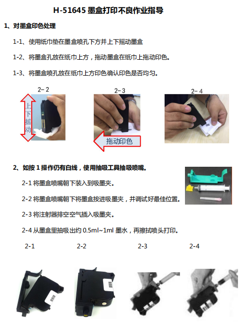

常见问题解答
Q：打印效果差，不清晰
A：
【墨盒问题】
常见处理方法：夹上墨盒夹，摇晃墨盒30秒，使用附带清洁液对喷头进行清洁，将清洁液直接喷在喷头上，用所附清洁布擦干净喷头，再使用附带的墨盒夹和注射器对喷头进行抽吸。查看墨盒状态，是否有漏墨、排线损坏等破损？
查看喷头喷嘴是否有异物？酒精棉片清洁后塑料膜下是否有无法清理的墨水？
打印测试页和对着白纸点击清洁喷嘴，具体效果怎么样？是否有白线，散墨？
查看墨盒底部52Pin处，是否有异常或污损？
（可选）如果客户有另外的设备，请客户将墨盒更换到其他设备上，再尝试打印，比较打印的样稿，是否有改善或者恶化？ 
【墨盒仓问题】
A：
常见处理方法：用气吹清理针脚上的脏污和异物，使用棉布沾酒精对触点处进行清洁。
查看墨盒仓，在光照好（如用手电照着）的情况下用手机拍照，请客户发原图，查看52Pin针脚处是否有污损或断针，断针问题需返厂或更换组件。
【霍尔板问题】
A：
排除以上问题后，有可能是设备的霍尔板出现了问题，返厂或通过更换霍尔板解决。
Q：芯片无法识别
A：
常见处理方法：
1、查看芯片是否脏污，识别芯片的针脚是否完好。
2、更换机器，查看该墨盒在其他同型号设备上是否可以正常识别。
3、更换墨盒，查看对应型号的其他墨盒在该机器上能否正常识别。
查看报错代码。
查看芯片型号与设备型号是否对应。
查看墨盒的芯片是否安装正常。
查看52Pin后侧的芯片识别针脚处，排查脏污和断针。
若无法解决，可能是识别芯片或主板出现了问题，返厂分析。